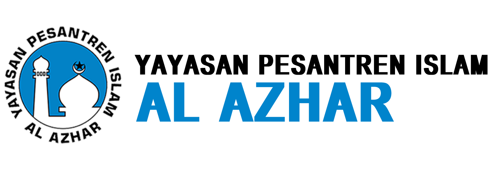
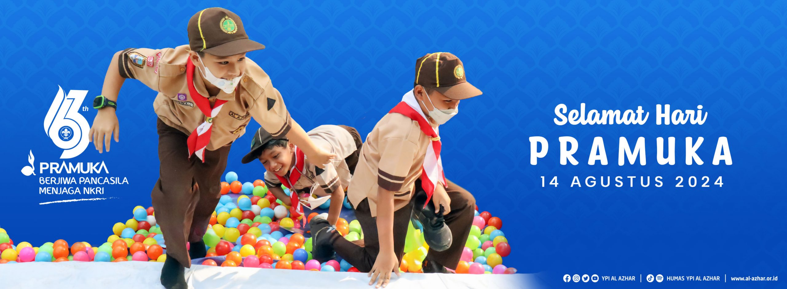
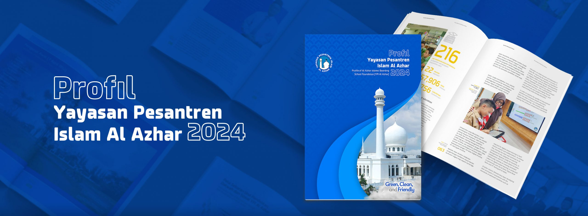
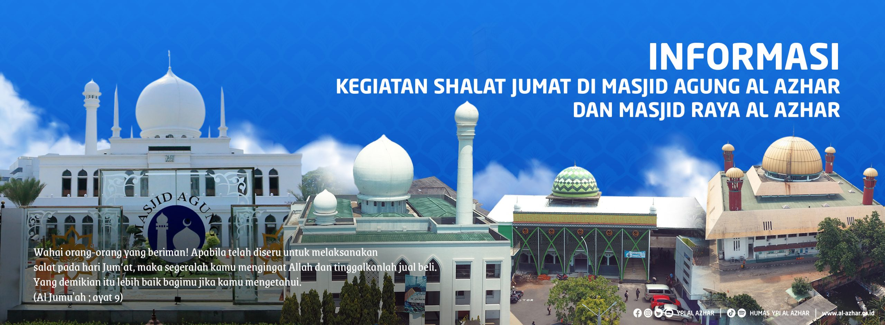

Jl.Sisingamangaraja Kebayoran Baru - Jakarta Selatan
(021) 7243933 / 7261233
humas@al-azhar.or.id

Home
TENTANG KAMI
Sejarah Berdirinya Yayasan
Visi Misi YPI Al Azhar
Company Profile
Pendiri dan Tokoh
Kepengurusan Yayasan
Struktur Organisasi
Management
Sekretariat
Direktorat Dikdasmen
Inspektorat
Direktorat Dakwah dan Sosial
Direktorat Dikti Diklat & Pengembangan Pendidikan
Direktorat Keuangan
Direktorat Dikti Diklat & Pengembangan Pendidikan
Identitas
Logo
Mars Al Azhar
Ikrar
Batik Al Azhar
Kerjasama
Yayasan Kerja Sama Tahun 2023
Syarat dan Kriteria
Kantor Konsultasi dan Bantuan Hukum
Inspektorat
Profile Inspektorat YPI Al Azhar
Kotak Pengaduan
Pendidikan
Visi Misi Pendidikan
Sekolah Islam Al Azhar
Tingkat TK
Tingkat SD
Tingkat Sekolah Menengah Pertama
Tingkat Sekolah Menengah Atas
Direktorat Dikdasmen
Kalender Pendidikan
Produk Pendidikan
Jumlah Sekolah, Murid, Guru dan Pegawai
Kerjasama Internasional
Seragam Murid
Prestasi Sekolah
Univ. Al Azhar Indonesia
Dakwah
Al Azhar Peduli
Masjid Al Azhar
Masjid Agung Al Azhar
Masjid RAya Al AZhar Sentra Primer
Masjid Raya Al Azhar Jababeka Cikarang
Masjid Raya Al Azhar Bintaro
Masjid Raya Al Azhar Cianjur
Masjid Raya Al Azhar Tangerang Selatan
Masjid Kampus Al Azhar Pejaten
Masjid Kampus Al Azhar Cibinong
Pendiddikan Islam Al Azhar (PIA)
Pendidikan Muballigh
Kursus Bahasa Arab
KBIHU Al Azhar
Lembaga Tahfidz
Usaha
Al Azhar Memorial Garden
Al Azhar Tour & Travel
Berkah Gemilang
Tanmiyyah Al Azhar
Koperasi Al Azhar
Sosial
Balai Pengobatan Umum & Gigi
Unit Penyelenggara Jenazah
Rumah Gemilang Indonesia
Laz Al Azhar
Wakaf Al Azhar
BMT Al Azhar
Aula Buya Hamka
Komunitas
ASBD
YISC
ASIA
Persaudaraan Haji Al Azhar
AYLI
Jamiyyah Sekolah Islam Al Azhar
Berita
Berita Terkini
Majalah
PMB
Pendaftaran Murid Baru TP.2025/2026
Sebaran Sekolah



Berita Terkini
0
MURID AL AZHAR
0
GURU & PEGAWAI AL AZHAR
0
SEKOLAH AL AZHAR